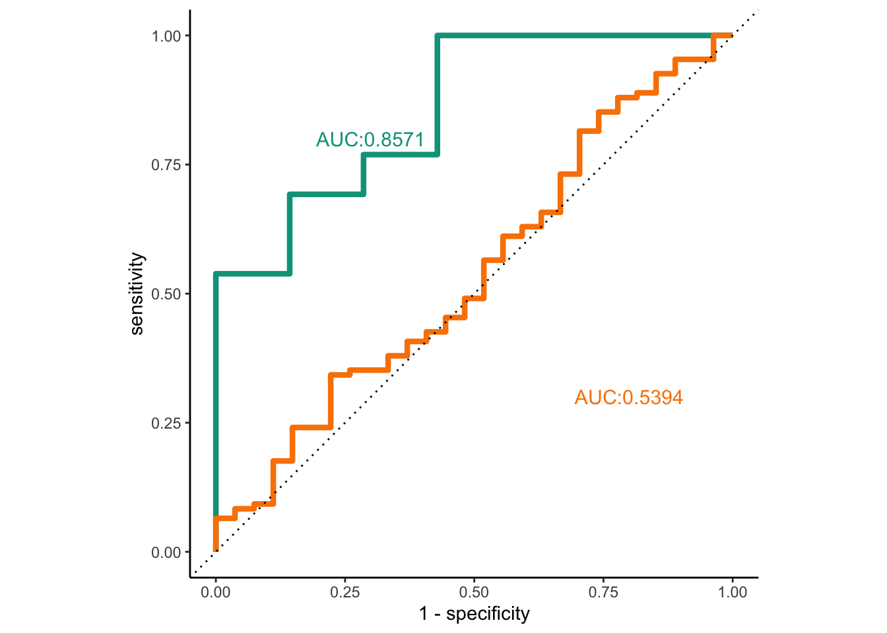
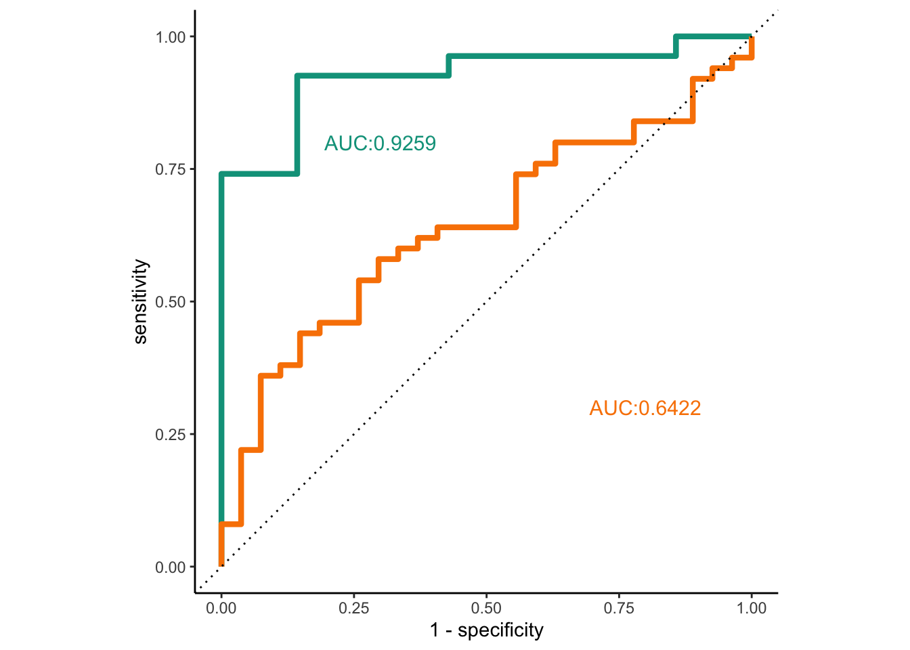
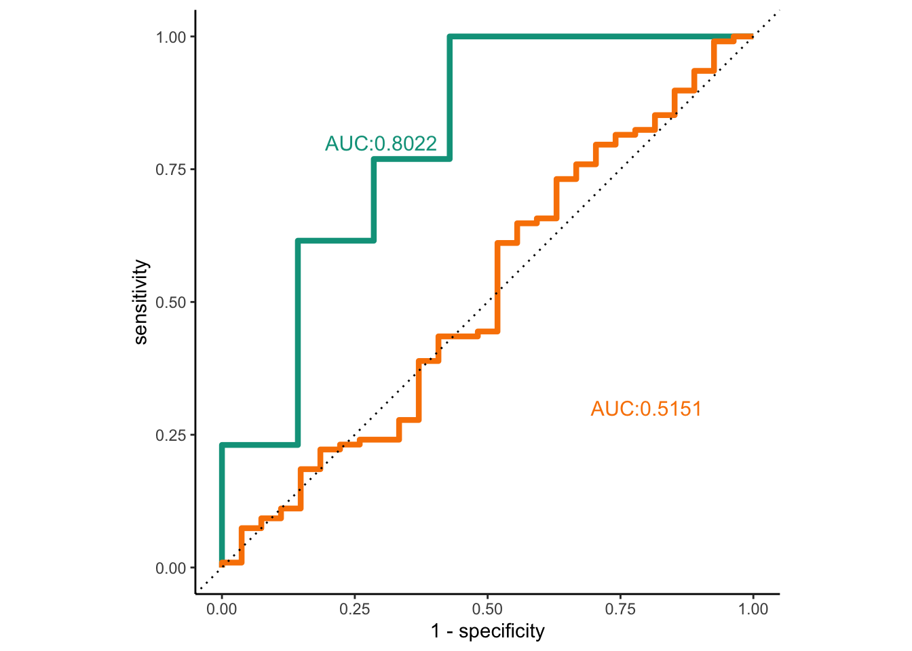
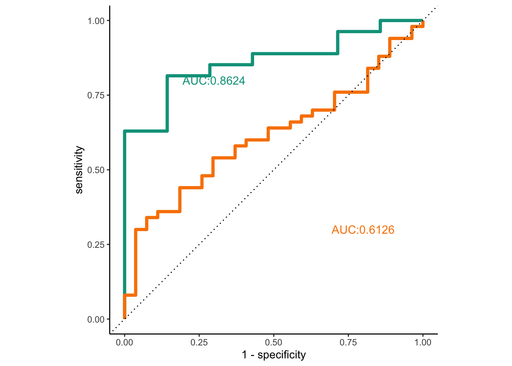

The Early Prediction of prEgnancy Complications Testing or ExPECT study
Machine learning classification
Author
Bram Van Gaever
Introduction
This notebook contains the code for the creation of the machine learning classifiers of the ExPECT study. The code is kept separate mainly for readability and to keep the code in check.
Code
# Chunck containing the used libraries, colors and some utility functions set.seed(2341)library(readxl)library(limma)library(bsseq)library(RColorBrewer)library(Rtsne)library(pheatmap)library(GenomicRanges)library(biomaRt)library(HDF5Array)library(kableExtra)library(patchwork)library(ggrepel)library(ggbeeswarm)library(seqsetvis)library(biomaRt)library(fuzzyjoin)library(ggpubr)library(tidyverse)library(tidymodels)#Plotting colorsGreen <-"#00A08A"Orange <-"#F98300"Blue <-"#5BBCD6"Purple <-"#BF8AC2"Brown <-"#B86D33"Orange2 <-"#CC9F68"Green2 <-"#7BB6AE"Blue2 <-"#00778A"Purple2 <-"#741078"color_palette <-c(Green, Orange, Blue, Purple, Brown, Green2, Purple2, Blue2, Orange2)gradient <-colorRampPalette(c(Blue, "#FFFFFF", Purple))(1000)#"not in" operator`%nin%`=Negate(`%in%`)#Ranges to id funtctionranges2id <-function(genomicRanges) { idVector <-c(paste0(genomicRanges@seqnames, ":", genomicRanges@ranges@start, "-", genomicRanges@ranges@start + genomicRanges@ranges@width -1))}#Id to ranges functionid2ranges <-function(idVector) { idTib <-as_tibble(idVector) %>%separate(value, into =c("seqnames", "start", "end"), sep ="[:-]", convert = T) genomicRanges <-GRanges(seqnames =idTib$seqnames, ranges =IRanges(start = idTib$start, end = idTib$end))}#Limma model fitting and result gathering fucntion train_limma <-function(matrix, design) { limma_fit =lmFit(matrix, design = design) eB_fit =eBayes(limma_fit) categories <-colnames(design)[-1] results =list()for (category in categories) { top =topTable(eB_fit, coef = category, p.value =0.01, number =Inf, adjust.method ="BH") results[[category]] = top }return(results)}plot_roc <-function(fit_prediction, fit_truth, fit_control, test_predictions, test_truth, test_control) { fit_auc <-roc_auc(fit_prediction, fit_truth, fit_control) test_auc <-roc_auc(test_predictions, test_truth, test_control) fit_roc <-roc_curve(fit_prediction, fit_truth, fit_control) test_roc <-roc_curve(test_predictions, test_truth, test_control)ggplot(mapping =aes(x =1- specificity, y = sensitivity)) +geom_path(data = fit_roc, color = color_palette[1], size =1.5) +geom_path(data = test_roc, color = color_palette[2], size =1.5)+geom_abline(lty =3) +geom_text(aes(x =0.30, y =0.80, label =paste0("AUC:", round(fit_auc$.estimate, 4))), color = color_palette[1], size =4) +geom_text(aes(x =0.80, y =0.30, label =paste0("AUC:", round(test_auc$.estimate, 4))), color = color_palette[2], size =4) +coord_equal() +theme_classic()}
Data loading and prepping
Data is loaded in the same manner as for the exploratory analysis. However this time, additional splits are made. The symptomatic and pre-symptomatic data sets are divided into a training and test set (each containing an equal proportion of cases and control samples). The training set is used for DMR identification and model training while the test sets are used for model validation.
Code
setwd("~/Drive/ExPECT paper Symptomatic analysis/Code/Git_repo")#Load bsseq objectbs_expect <-loadHDF5SummarizedExperiment(dir ="Data/Methylation/")#Load clustered methylation dataclusters_expect <-readRDS("Data/Methylation/clusters_expect.Rds")#Load study annotationannotation <-read_csv("Data/expect_annotation.csv")long_samples <-read_table("Data/longitudinal_samples.txt")#Split up annotations for ease of uselong_annotation <- annotation %>%filter(Sample_id %in% long_samples$Sample_id)presympt_annotation <- annotation %>%filter(Group =="Pre-symptomatic") sympt_annotation <- annotation %>%filter(Group =="Symptomatic") %>%filter(Sample_id %nin% long_annotation$Sample_id)#Split up clusters for ease of useclusters_presympt <- clusters_expect %>%select(all_of(presympt_annotation$Sample_id))clusters_sympt <- clusters_expect %>%select(all_of(sympt_annotation$Sample_id))
The symptomatic set is first divided after which DMR’s are recalculated using limma on the samples included in the training set alone. A set of 25 DMR’s is then selected for further modelling to limit overfitting of the models. However, because our cohort is fairly limited, some overfitting is impossible to prevent.
Code
#Prepare a dataset containing symptomatic samplesmodel_meth_sympt <- clusters_sympt %>%t(.) %>%as_tibble(.) %>%bind_cols(dplyr::select(sympt_annotation, Category, Sample_id)) %>%mutate(Category =as.factor(Category)) %>%relocate(Category) #Create a training and test setsympt_data_split <-initial_split(model_meth_sympt, strata = Category)sympt_train <-training(sympt_data_split)sympt_test<-testing(sympt_data_split)#Recalculate DMRs on the test setsympt_train_dmr <- clusters_expect[, sympt_train$Sample_id]train_annot <- annotation[annotation$Sample_id %in% sympt_train$Sample_id,] %>%arrange(match(Sample_id, colnames(sympt_train_dmr)))sympt_train_dmr_design <-model.matrix(~Category + Batch + Sex, train_annot)dmr_sympt_train <-train_limma(sympt_train_dmr, sympt_train_dmr_design)sympt_model_clusters <-rownames(dmr_sympt_train$CategoryPE)#Subset the training and testing setmodel_meth_sympt_subset <- dplyr::select(model_meth_sympt, Category, sympt_model_clusters[1:25])sympt_data_split_subset <-initial_split(dplyr::select(model_meth_sympt, Category, sympt_model_clusters[1:25]), strata = Category)sympt_train <-training(sympt_data_split_subset)sympt_test<-testing(sympt_data_split_subset)#Set validation foldssympt_folds <-vfold_cv(sympt_train, v =5, strata = Category)sympt_loo_folds <-vfold_cv(sympt_train, v =nrow(sympt_train)) #using a workaround here to get loocv as it's not really supported by tidymodels#Set metric types to be collectedsensPE <-metric_tweak("sensPE", sensitivity, event_level ="second")specPE <-metric_tweak("specPE", specificity, event_level ="second")cls_metrics <-metric_set(sensPE, specPE, accuracy)#Prepare a dataset of the pre-symptomatic samples to use for the symptomatic modeltest_set_presympt <- clusters_presympt[sympt_model_clusters[1:25],] %>%t(.) %>%as_tibble(.) %>%bind_cols(dplyr::select(presympt_annotation, Category)) %>%mutate(Category =as.factor(Category)) %>%relocate(Category)
The same approach is used for the presymptomatic cohort. This time DMR’s are calculated with the DMRfinder package instead. Again the top 25 most significant DMR’s are used for model creation
Code
#Prepare a dataset containing symptomatic samplesbs_presympt <- bs_expect[,presympt_annotation$Sample_id]pData(bs_presympt) <-pData(bs_presympt) %>%as_tibble(rownames =NA) %>%rownames_to_column(var ="Sample_id") %>%left_join(presympt_annotation)rownames(pData(bs_presympt)) <- bs_presympt$Sample_idcov_presympt <-getCoverage(bs_presympt, type ="Cov", what ="perBase")keep <-which(rowSums(cov_presympt[,bs_presympt$Category =="Control"] >=2) >=2&rowSums(cov_presympt[,bs_presympt$Category =="PE"] >=2) >=2)bs_presympt_filtered <- bs_presympt[keep,]#Create a training and test setpresympt_data_split <-initial_split(presympt_annotation, strata = Category)presympt_train <-training(presympt_data_split)presympt_test<-testing(presympt_data_split)#Calculate DMRs on the training setpe_ids <- presympt_train[presympt_train$Category =="PE",]$Sample_idcontrol_ids <- presympt_train[presympt_train$Category =="Control",]$Sample_idpresympt_t_stat <-BSmooth.tstat(bs_presympt_filtered, group1 = pe_ids,group2 = control_ids,estimate.var ="group2",local.correct = T,verbose = T)dmr_presympt_finder_train <-dmrFinder(presympt_t_stat, qcutoff =c(0.01, 0.99))dmr_presympt_finder_train_filtered <-subset(dmr_presympt_finder_train, n >=3&abs(meanDiff) >=0.1)#Get methylation values for the testing an training setmodel_meth_presympt <-getMeth(bs_presympt_filtered, what ="perRegion", type ="smooth", regions = dmr_presympt_finder_train_filtered[1:25,]) %>%t(.) %>%as_tibble(.) %>%bind_cols(dplyr::select(presympt_annotation, Category)) %>%mutate(Category =as.factor(Category)) %>%relocate(Category) presympt_data_split <-initial_split(model_meth_presympt, strata ="Category")presympt_train <-training(presympt_data_split)presympt_test <-testing(presympt_data_split)#Set validation foldspresympt_folds <-vfold_cv(presympt_train, v =5, strata = Category)presympt_loo_folds <-vfold_cv(presympt_train, v =nrow(presympt_train)) #using a workaround here to get loocv as it's not really supported by tidymodels#Prepare a dataset of the pre-symptomatic samples to use for the symptomatic modelbs_sympt <- bs_expect[,sympt_annotation$Sample_id]test_set_sympt <-getMeth(bs_sympt, type ="smooth", what ="perRegion", regions = dmr_presympt_finder_train_filtered[1:25,]) %>%t(.) %>%as_tibble(.) %>%bind_cols(dplyr::select(sympt_annotation, Category)) %>%mutate(Category =as.factor(Category)) %>%relocate(Category)
Machine learning
Three types of classical machine learning classifiers are tested on the dataset. A random forest classifier, support vector machine and a logistic regression model. Each model type is trained on the training set of each cohort and then tested on their respective test sets as well as the entire other cohort, e.g: a random forest classifier is trained on the training set of the symptomatic cohort, the obtained model is tested on the testing set of the symptomatic cohort as well as on the full presymtomatic cohort.
In the following section the terms “Diagnostic” and “Predictive” model are used for models trained on symptomatic and pre-symptomatic data respectively. In ROC plots the green curve shows testing results on the testing set from the same cohort as the training data (intended use) while the orange curve shows results from testing with the other cohort.
Random forest classifiers
A random forest classifier from the ranger package is built. Hyperparameter training is first performed on the number of trees, number of randomly selected predictors and the minimal node size. More info on random forest classifiers can be found on Wikipedia.
#make a rf modelrf_mod <-rand_forest(trees =tune(), mtry =tune(), min_n =tune()) %>%set_engine("ranger") %>%set_mode("classification")#make a workflow for resamplingrf_wf <-workflow() %>%add_model(rf_mod) %>%add_formula(Category ~ .) #Make a grid for a parameter searchrf_grid <-grid_regular(trees(), finalize(mtry(), x = sympt_folds), min_n(), levels =5)#fit the resamplingssympt_rf_tune <- rf_wf %>%tune_grid(resamples = sympt_folds, grid = rf_grid)#get the best modelsympt_best_rf <- sympt_rf_tune %>%select_best(metric ="accuracy")#make the final fit and evaluate the test setsympt_final_rf_wf <- rf_wf %>%finalize_workflow(sympt_best_rf)sympt_final_rf_fit <- sympt_final_rf_wf %>%last_fit(sympt_data_split_subset)#Get metrics sympt_rf_metrics <- sympt_final_rf_wf %>%last_fit(sympt_data_split_subset, metrics = cls_metrics) %>%collect_metrics()#Test the model on the pre-symptomatic datasympt_rf_fit <- sympt_final_rf_wf %>%fit(model_meth_sympt_subset)presympt_rf_predictions <-predict(sympt_rf_fit, test_set_presympt, type ="prob") %>%bind_cols(Truth = test_set_presympt$Category)plot_roc(sympt_final_rf_fit$.predictions[[1]], "Category", ".pred_Control", presympt_rf_predictions, "Truth", ".pred_Control")

The best performing random forest model has the following parameters
mtry
trees
min_n
1
500
2
Code
#fit the pre symptomatic resamplingspresympt_rf_tune <- rf_wf %>%tune_grid(resamples = presympt_folds, grid = rf_grid)#get the best modelpresympt_best_rf <- presympt_rf_tune %>%select_best(metric ="accuracy")#make the final fit and evaluate the test setpresympt_final_rf_wf <- rf_wf %>%finalize_workflow(presympt_best_rf)presympt_final_rf_fit <- sympt_final_rf_wf %>%last_fit(presympt_data_split)#Get metrics presympt_rf_metrics <- presympt_final_rf_wf %>%last_fit(presympt_data_split, metrics = cls_metrics) %>%collect_metrics()#Test the model on the symptomatic datapresympt_rf_fit <- presympt_final_rf_wf %>%fit(model_meth_presympt)sympt_rf_predictions <-predict(presympt_rf_fit, test_set_sympt, type ="prob") %>%bind_cols(Truth = test_set_sympt$Category)plot_roc(presympt_final_rf_fit$.predictions[[1]], "Category", ".pred_Control", sympt_rf_predictions, "Truth", ".pred_Control")

The best performing random forest model has the following parameters
mtry
trees
min_n
2
500
2
Support vector machine
For the support vector machine, the kernlabpackage is used set to classification mode. The only hyperparameter that is tuned is the cost parameter. More info on support vector machines can be read here
The best performing support vector machine has the following parameters
cost
0.013139
Regression model
A logistic regression model is created with an elastic regularisation. The model family is set to binomial and the glmnet package is used for modelling. Both the model penalty and regularisation mixture are tuned during hyperparameter tuning. More about regression here
#Make an elestic net reggression modelreg_mod <-logistic_reg(penalty =tune(), mixture =tune()) %>%set_engine("glmnet", family ="binomial") %>%set_mode("classification")#Make workflowreg_wf <-workflow() %>%add_model(reg_mod) %>%add_formula(Category ~ .)#Make a parameter gridreg_grid <-grid_regular(penalty(), mixture(), levels =5)#Tune the modelsympt_reg_tune <- reg_wf %>%tune_grid(resamples = sympt_folds, grid = reg_grid, metrics = cls_metrics)sympt_best_reg <- sympt_reg_tune %>%select_best(metric ="accuracy")sympt_final_reg_wf <- reg_wf %>%finalize_workflow(sympt_best_reg)sympt_final_reg_fit <- sympt_final_reg_wf %>%last_fit(sympt_data_split_subset)#Get metrics sympt_reg_metrics <- sympt_final_reg_wf %>%last_fit(sympt_data_split_subset, metrics = cls_metrics) %>%collect_metrics()#Test the model on the pre-symptomatic datasympt_reg_fit <- sympt_final_reg_wf %>%fit(model_meth_sympt_subset)presympt_reg_predictions <-predict(sympt_reg_fit, test_set_presympt, type ="prob") %>%bind_cols(Truth = test_set_presympt$Category)plot_roc(sympt_final_reg_fit$.predictions[[1]], "Category", ".pred_Control", presympt_reg_predictions, "Truth", ".pred_Control")

The best performing regression model has the following parameters
penalty
mixture
0
0
Code
#Tune the modelpresympt_reg_tune <- reg_wf %>%tune_grid(resamples = presympt_folds, grid = reg_grid, metrics = cls_metrics)presympt_best_reg <- presympt_reg_tune %>%select_best(metric ="accuracy")presympt_final_reg_wf <- reg_wf %>%finalize_workflow(sympt_best_reg)presympt_final_reg_fit <- presympt_final_reg_wf %>%last_fit(presympt_data_split)#Get metrics presympt_reg_metrics <- presympt_final_reg_wf %>%last_fit(presympt_data_split, metrics = cls_metrics) %>%collect_metrics()#Test the model on the pre-symptomatic datapresympt_reg_fit <- presympt_final_reg_wf %>%fit(model_meth_presympt)sympt_reg_predictions <-predict(presympt_reg_fit, test_set_sympt, type ="prob") %>%bind_cols(Truth = test_set_sympt$Category)plot_roc(presympt_final_reg_fit$.predictions[[1]], "Category", ".pred_Control", sympt_reg_predictions, "Truth", ".pred_Control")

The best performing regression model has the following parameters
penalty
mixture
1
0
The following table contains specificity and sensitivity metrics for each of the create models (tested on their respective test set). Most models overclassify samples as controls, symptomatic models are more powerful at differentiating then pre-symptomatic models